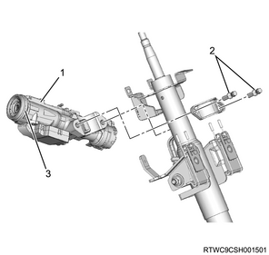
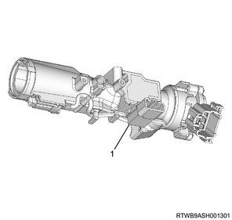

Key reminder switch removal (All models)
1. Battery ground cable disconnect
1. Disconnect the battery ground cable from the battery.
Caution
- Do not disconnect within 1 minute after turning OFF the ignition switch.
2. Driver air bag assembly removal
Note
- Verify the holes located on the both sides of the steering cover.

Note
- Verify the lever position in the hole with the illustration below.

Note
- Insert a bar of diameter 6 mm {0.24 in} to remove the driver airbag assembly from the lever.

1. Remove the driver air bag assembly from the steering wheel.
2. Disconnect the connector from the driver air bag assembly.
Note
- Disconnect the airbag connector.
- Disconnect the horn connector.

- Airbag connector
- Horn connector
Warning
- Keep the airbag assembly away from your body when carrying it.
- When putting down an undeployed airbag assembly, make sure to face the trim cover upward.
- Place the trim cover upward on a flat surface.
- Failure to follow this procedure may result in personal injury.

3. Steering cowl removal
1. Remove the steering cowl from the steering column.
Note
- Remove the steering cowl lower mounting screw from the steering cowl lower.
- Remove the steering cowl lower from the steering column.
- Remove the steering cowl upper mounting screws from the steering cowl upper.
- Remove the steering cowl upper from the steering column.

- Steering cowl upper
- Steering cowl lower mounting screw
- Steering cowl lower
- Steering cowl upper mounting screw
4. Steering lock assembly removal
1. Remove the steering lock assembly from the steering shaft assembly.
Caution
- Do not damage the ICU antenna coil.
Note
- As a shear bolt (a type with a head that can be twisted off after it is tightened) is used for the tightening bolt, use an extractor or a reverse tap to remove.

- Steering lock assembly
- Shear bolt
- ICU antenna coil
5. Key reminder switch removal
1. Remove the key reminder switch from the steering lock assembly.

- Key reminder switch